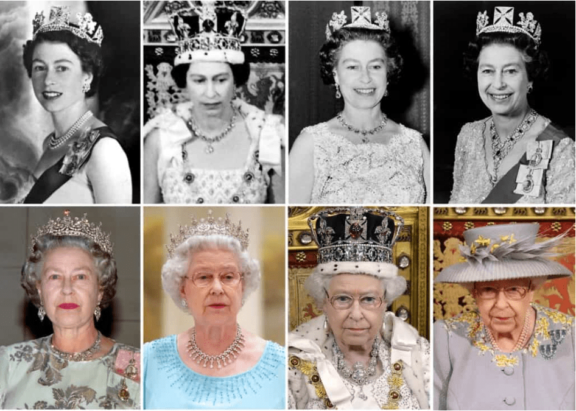
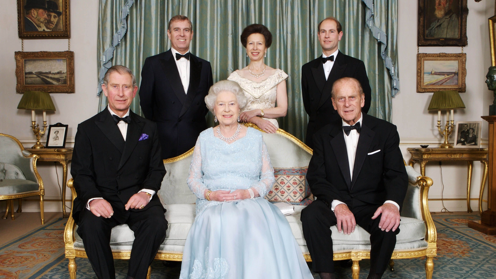
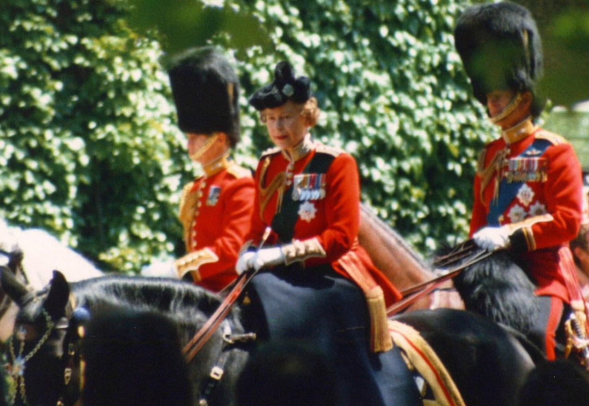
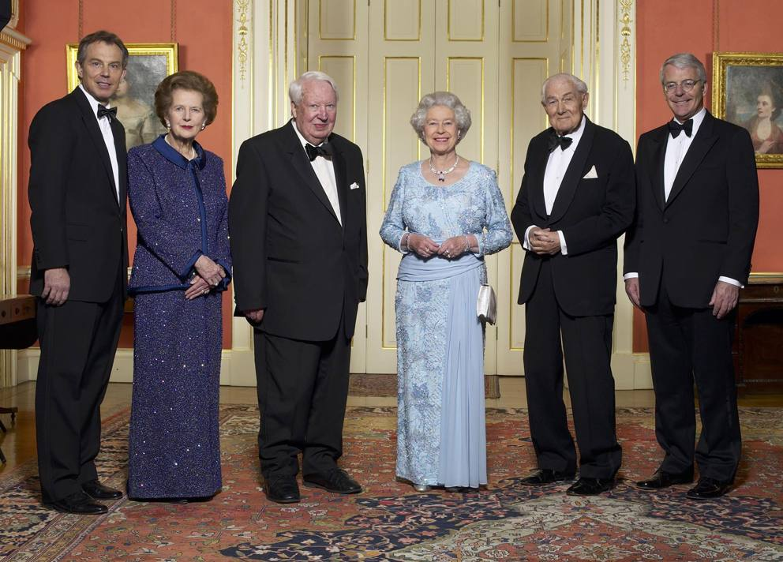
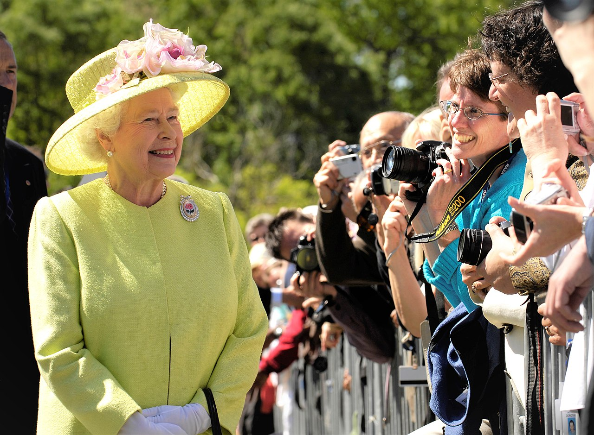
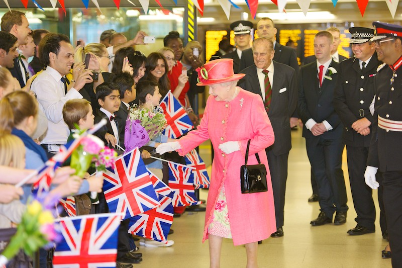
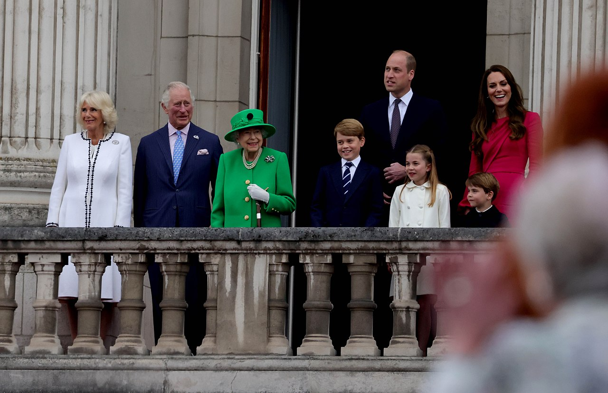
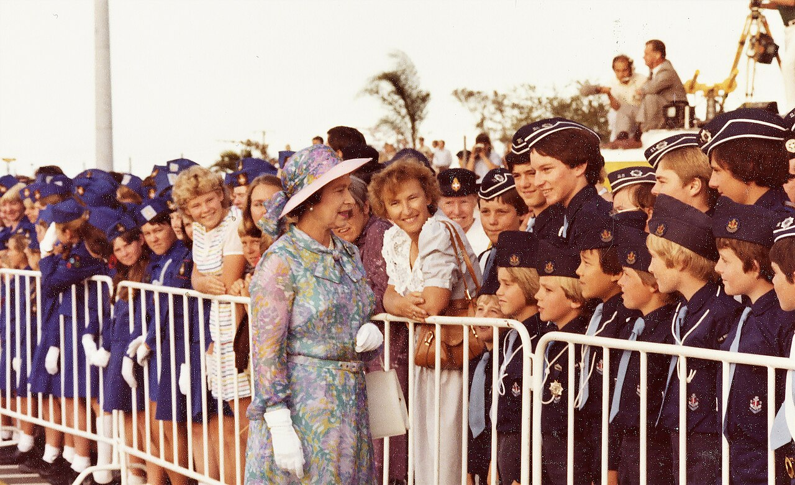

Here are some iconic footages of Queen Elizabeth II:
       

Elizabeth II was the Queen of the United Kingdom and other Commonwealth realms from 1952 until her death in 2022. She was the queen regnant of 32 sovereign states and remained monarch of 15 realms at the time of her death.
Her reign of 70 years and 214 days is the longest of any British or female monarch and the second longest in history. Born in London in 1926, she became queen in 1952 at the age of 25.
Elizabeth was married to Philip Mountbatten for 73 years and had four children. She served as a constitutional monarch through significant political changes and made historic visits worldwide.
Despite occasional challenges, support for the monarchy and her personal popularity remained high throughout her lifetime. Elizabeth died at the age of 96 and was succeeded by her son, Charles III.
Queen Elizabeth II had a variety of interests and hobbies throughout her life. She was known to enjoy horseback riding, a passion she shared with her family. Additionally, she was fond of outdoor activities such as walking and fishing, often spending time at her country estates.
Elizabeth also had a keen interest in dogs and was known for her love of corgis, a breed closely associated with the royal family. She bred and owned many corgis over the years, considering them to be loyal companions.
Beyond her official duties as queen, Elizabeth II had a wide range of interests and pursuits. She was particularly passionate about the arts and culture, regularly attending concerts, theater performances, and art exhibitions.
Elizabeth also had a strong interest in history and literature, often engaging in discussions with historians and authors. She was known to have a vast personal library and enjoyed reading biographies and historical novels in her spare time.
Queen Elizabeth II was influenced by various factors throughout her life, including her family, upbringing, and the historical context of her reign. She was deeply influenced by her parents, King George VI and Queen Elizabeth The Queen Mother, who instilled in her a sense of duty and responsibility from a young age.
Additionally, Elizabeth's experiences during World War II and the post-war period shaped her outlook on leadership and public service. She was inspired by the resilience and determination of the British people during times of crisis.